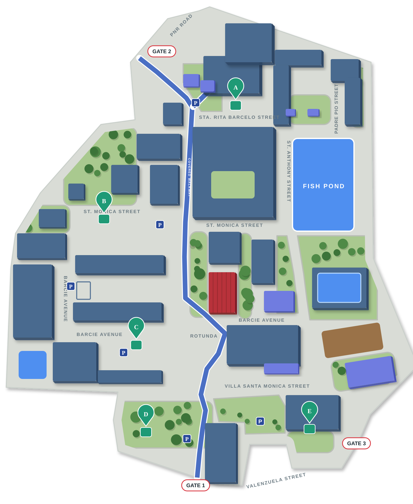

Campus Map and Routes
Place campus locations and draw verified walking routes. Navigation nodes and connections are generated automatically from saved route paths.
Campus map base
The official 2D campus map is the shared reference for all locations and routes. Place markers on the map; route paths will generate their navigation data automatically.
Visual Route Builder
Choose mapped start and destination locations, then draw the actual walking path on the campus map. Saving the drawn route creates and reuses its navigation connections automatically. Review the path carefully before publishing it to guest navigation.

Click to add path points. At zoom levels above 100%, drag an empty map area to pan; drag a waypoint to adjust it. Building markers remain separate from walkway junctions.
Saved routes Minimize / Expand
Draft and incomplete routes stay private. Only completed routes appear in navigation.
Loading saved routes…
Add Campus Location Marker
Choose an existing campus location, then click its position on the map. Existing location markers are shown to help you place it.